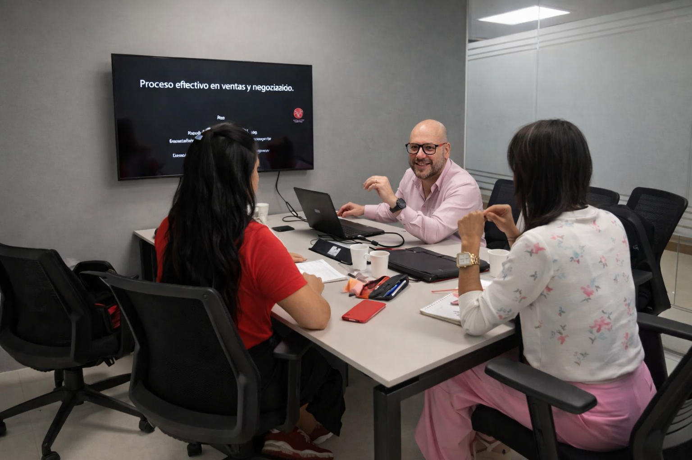
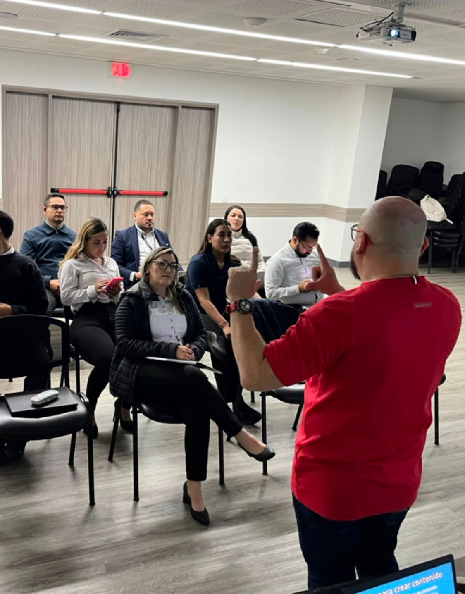

El talento correcto empieza con un diagnóstico correcto.

Antes de contratar o culpar a tu equipo, necesitas entender qué está fallando.
Evaluar equipoEvalúa en 3 minutos tus habilidades comerciales y detecta tus puntos críticos con nuestro diagnóstico inteligente.
Hacer diagnóstico gratisEl problema no es tu producto. Es tu sistema comercial.
Evalúa tu situación ahoraNuestro sistema analiza 10 áreas clave de tu desempeño comercial y te muestra en qué estás fallando.

Antes de contratar o culpar a tu equipo, necesitas entender qué está fallando.
Evaluar equipo
La mayoría capacita sin saber qué mejorar. Nosotros detectamos primero.
Ver mi nivel comercialCada empresa tiene fallas distintas. Identifícalas antes de actuar.
Detectar fallas[Espacio para el formulario de recolección de datos]